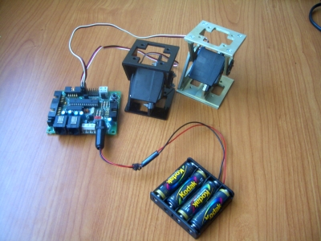

He empezado a trabajar en que mis robots modulares sean autónomos. Hasta ahora se controlaban desde el PC. Sin embargo, el modelo de control desarrollado en mi tesis doctoral, basado en osciladores sinusoidales, está pensado para poderse implementar usando pocos recursos, como por ejemplo microcontroladores de 8 bits.
Las fases para que los robots modulares sean autónomos son:
1.- Autonomía del software. El programa para generar la locomoción
se tiene que ejecutar en un microcontrolador
2.- Integración de la electrónica en los módulos Y1.
Hay que hacer una placa que se pueda meter dentro de un módulo
3.- Autonomía de alimentación. Seleccionar unas baterías e integrarlas
dentro de los módulos (o colocarla entre ellos).
He empezado por la fase 1. Ya tengo una primera versión del software para ejecutarse en una tarjeta Skypic, que tiene un pic16f876a. Este software lo he llamado micro-osciladores. En este vídeo se puede ver uno de los experimentos realizados, en los que se han colocados dos módulos que oscilan de manera autónoma con una amplitud de 45 grados y desfase de 90 grados:

El software está programado en C usando el SDCC. Debido a un bug en este compilador las funciones trigonométricas no están disponibles por lo que he implementado mi propia función sin() usando tablas.
Todas las fuentes están disponibles en la página de los micro-osciladores.
Hola,
¿Has pensado como los vas a comunicar? Lo digo porque tendrán que ir sincronizados entre ellos para que no se produzca un desfase que pueden producir efectos no deseados.
No se si te acordarás que te dije (en las Jornadas de ARDE) que había estado siguiendo tu trabajo, y había pensado en este problema. Las solución que se me había ocurrido es hacer un módulo 1 (en la cabeza o en la cola) que hiciera de máster de la comunicación interna, enviando a parte de las límeas de datos, una línea de sincronismo (o hacerlo vía software, pero así no te libras de las desincronizaciones de reloj).
Se pueden explorar las dos vertientes modificando brevemente el software.
S2
Ranganok Schahzaman
Hola Ranganok!
Lo bueno de la robótica modular es que quedan muchísimas cosas por investigar y probar 🙂
El problema de la escalabilidad todavía no lo he abordado. Ahora me voy a centrar en suponer una red de microcontroladores formada únicamente por un único nodo que será capaz de hacer oscilar hasta 8 servos. Con ello quiero que los robots que tengo ahora puedan moverse de forma autónoma.
Pero efectivamente, luego aparece el problema de escalar el robot. ¿Qué pasa si se hace un robot serpiente con 16 módulos? Hay que pensar en una topología de red y un protocolo de comunicación que permita su correcto funcionamiento y sincronización. Es un problema muy interesante 🙂
Saludos, Obijuan